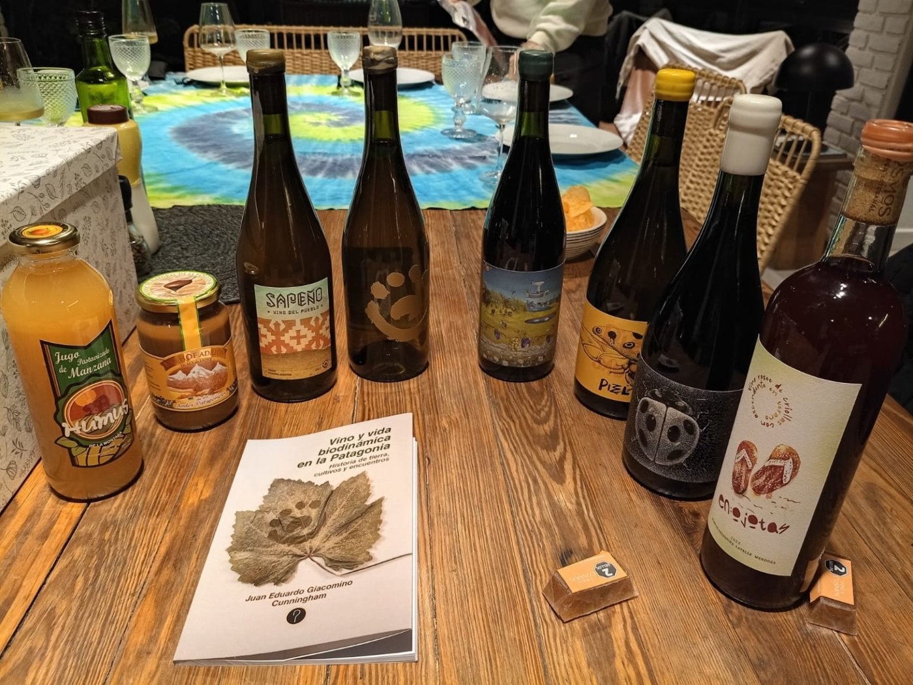
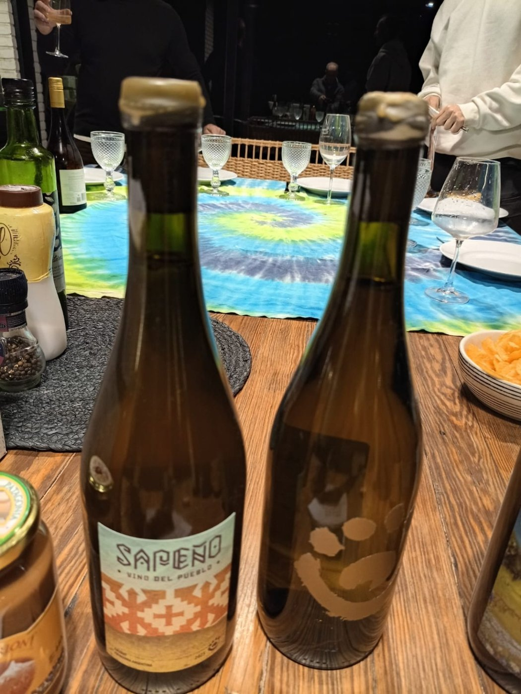
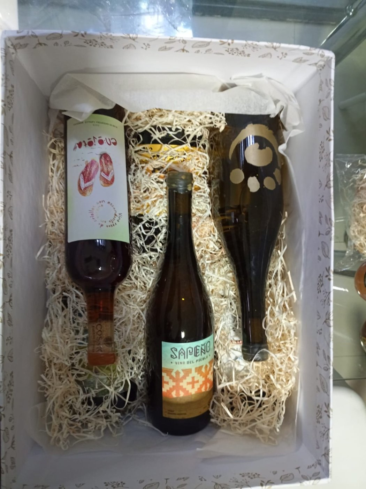

Venta de vinos
Vinos con origen
Una selección de vinos de producción consciente para descubrir y compartir.
Consultar vinosConociendo el origen y creando una economía fraterna
Vinos · Catas · Regalos empresariales
Acercamos vinos y productos con identidad, conectando a quienes los crean con quienes los disfrutan.
Ofrecemos catas de vinos y regalos empresariales.
Conocé nuestras propuestasLo que hacemos

Venta de vinos
Una selección de vinos de producción consciente para descubrir y compartir.
Consultar vinos
Catas de vinos
Ofrecemos catas para conocer los vinos, sus productores y las historias de cada origen.
Consultar por una cata
Regalos empresariales
Propuestas para empresas que combinan vinos y productos con identidad. Consultanos para armar tu regalo.
Consultar por regalosPresentación
Sin Catálogo reúne proyectos con identidad, producción consciente y una relación auténtica con el territorio.
Acompañan
Unidas por acciones concretas para el cuidado ambiental. Tocá cada marca para conocer su historia, sus productos y sus redes.
Hablemos
Escribinos para conocer los vinos disponibles, organizar una cata o consultar por regalos empresariales.
Contactanos por WhatsApp